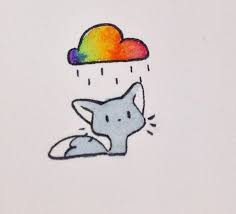
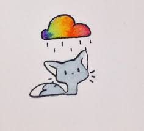

Рису́нок (через польск. rysowac из ср.-в.-нем. rizen — резать, чертить) — изображение на плоскости, созданное графическими средствами.
Первые в мире образцы наскальной живописи вышли из-под резца неандертальца в Испании около 65 тысяч лет назад. Такие результаты дала повторная датировка самых древних пещерных рисунков в Испании. Ранее считалось, что рисунки более поздние и нанесены они кроманьонцами.
 
